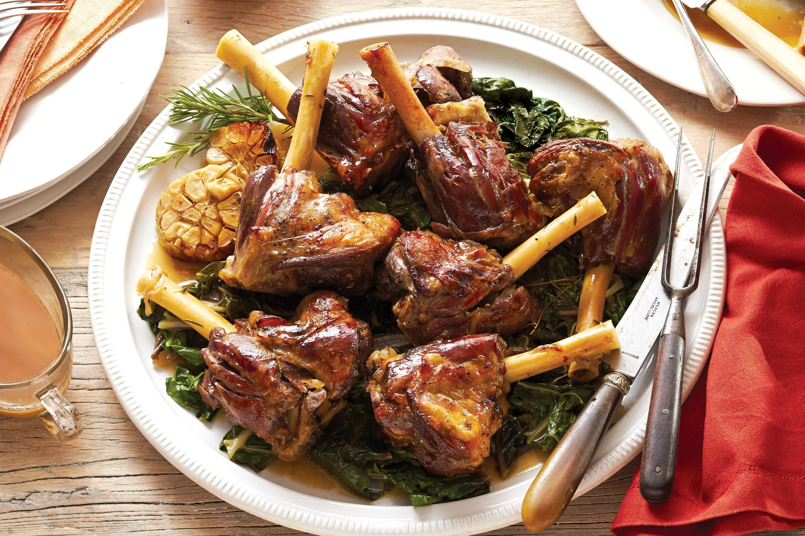

Lamb Shanks Recipe
Ingredients
- 4 lamb shanks
- 2 cups red wine
- 2 cups beef broth
- 1 large onion, chopped
- 2 carrots, chopped
- 2 celery stalks, chopped
- 3 cloves garlic, minced
- 2 sprigs fresh rosemary
- Salt and pepper, to taste
Instructions
- Season lamb shanks with salt and pepper.
- In a large pot, sear the shanks on all sides until browned.
- Add onions, carrots, and celery, cooking until softened.
- Pour in red wine, letting it reduce by half.
- Add beef broth, garlic, and rosemary. Bring to a simmer.
- Cover and braise for 2-3 hours until tender.
- Serve shanks with sauce poured over.